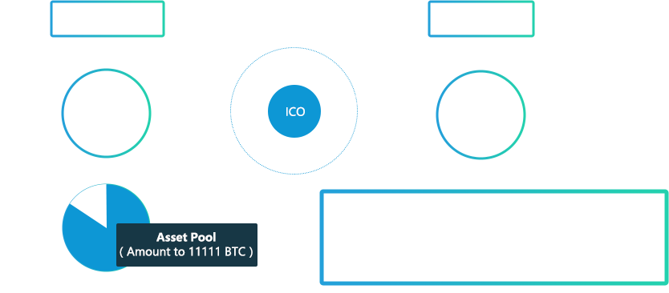

ACChain is an international open source community originated by global blockchain enthusiasts， it is an asset digitization tool and platform to realize global asset digitization. With the development of project, the feasibility of the theory has been approved, and now, the first phase ACC ICO will be launched on the international platforms.
Rules of ACC ICO
- ICO Object: BTC、ETH
- Date for ICO: MAY 9th, 2017——June 6th, 2017, 28 days period
- ICO Rules:
The goal of ICO is to raise 100 million units of ACC, 1000 units of ACC is minimum investing number in the ICO (Note: If the number of ACC invested is lower than 1000, this investment will be considered as invalid and the invested BTC/ETH will not be returned.
- Fund Distribution:
The number of investment in BTC is 11111 unit, among which, 20% of digital asset will be used as incentives for delegates and 80% of digital asset will be locked in asset pool through smart contract of blockchain. With this ICO we hope to structure DAO (decentralized autonomous organizations) and to manage the fund from ICO. Capital will be managed by all "peerages" members, each transaction will have to be approved by 51% of the members. With the value of ACChain (asset collection chain) increasing, the value of ACC will rise significantly.
- ICO Policy:
- The ICO has 4 stages, each stage has a different goal.Details as below,(In Beijing Time)
| EarlyBird | First week | Second week | Third week | Fourth week | |
|---|---|---|---|---|---|
| Beijing Time | 18pm 9th May to 18pm 10th May | 18pm 10th May to 18pm 16th May | 18pm 16th May to 18pm 23rd May | 18pm 23rd May to 18pm 30th May | 18pm 30th May to 18pm 6th June |
| 1BTC | 11000ACC | 9000ACC | 8500ACC | 8000ACC | 7500ACC |
| 1ETH | 650ACC | 550ACC | 500ACC | 450ACC | 400ACC |
- Flow Chart of Capital Allocation: 
- ICO Platform
- International ICO Platform：
-
Serial number Platform ICO Amount(BTC) Remark 1 ICO COUNTDOWN 600 Units 2 Coinschedule 600 Units - ICO Website for ACC：
-
Serial number Platform ICO Amount(BTC) Remark 1 www.acchain.org 3000 Units - Bution Chanel：
-
Serial number Platform ICO Amount(BTC) Remark 1 USA Node 2000 Units 2 UK Node 2000 Units 2 Cambodia Node 2911 Units
Project Introduction
- ACChain has built a pure decentralized platform for asset digitization, it is the common community of asset tokens, by copying Asset Blockchain general ledgers to implement asset digitization, and using ACC (Asset Collection Coin) as a common exchange medium to realize assets circulation.
- ACChain is a distributed general ledger with self-improving ability. Each node can create a new block by working on the chain (copying the general ledger) and to form an asset chain.
- ACC is the standard token in ACChain for token circulation and interchanging. As the general ledger token, ACC can be used as the common medium to be used to realize the interchange and circulation of token and standard token.
- ACChain is the tool of asset digitization for the global applications.
- ACChain Community is launching a global ICO for tokens that made on ACChain, structuring international supernode networks, the process of the first supernode network is also the process of the exchange between mainstream tokens in the market with Asset standard token -- ACC, they will jointly form the digital asset interchange object -- SDR digital currency. In the meantime, each global node will establish regional “general ledger token” (GLT) for regional circulation, thus, the digital currency SDR will be the main exchange coin along with tokens of each international node’s general ledger token in the international exchange. In this ecosystem, each node’s token can use GLT to realize regional circulation, and each GLT and use ACC to realize international circulation. Those control the international supernodes, win the market.
International Token Issuing Plan
| List | Token project | Token type | Due | Publicity | International |
|---|---|---|---|---|---|
| 1 | RET-SCHSR | Commodity(Propert) | 4 Apr-28 Apr | 9 May-15 May | US |
| 2 | ST—SCLMaldives | Equity | May | TBC | US(Maldives) |
| 3 | TLT-SCLMaldives | Commodity(Travel) | May | TBC | US(Maldives) |
| 4 | ST-HGF | Equity | June | TBC | US |
| 5 | TLT-HGF | Application(Travel) | June | TBC | US |
| 6 | ST-MBV | Equity | July | TBC | Belize |
| 7 | TLT-MBV | Application(Travel) | July | TBC | Belize |
| 8 | XB | Commodity | End of June | TBC | UK |
| 9 | KB | Commodity | End of May | TBC | Cambodia |
| 10 | Maotai Base Wine | Commodity | End of May | TBC | CN |
| 11 | Honghu Lobster | Commodity | Beginning of June | TBC | CN |
| 12 | Global Migratory Birds Hotel | Application | Beginning of June | TBC | CN |
| 13 | Wuchang Rice | Commodity | Middle of June | TBC | CN |
Feature of Technology
- 1、Distributed general ledger subject:
- The distributed general ledger subject confirms the general rules of ACChain general ledger, core algorithm of asset corresponding with cord, transaction rules, consensus system, private key and address, the security technology of account.
- 2、Working- Incentives system
- The incentives system based on different working methods: creation of block, asset issuing, community voting.
- 3、Encrypt PBFT algorithm
- Essentially, the issue of abuse of right by the delegates could be solved by adding PBEF algorithm, which makes the delegate’s ability of accounting become more controllable.
- 4、Secondary technology of Dapp and tokens
- The ACChain system provides a command tool, it supports secondary chain development; each Dapp corresponding to one secondary chain, and the core logic of the secondary chain uses nodes to develop, interface can adopt any front-end technology.
- 5、Technology of high speed transaction
- The level of abstraction was built in the ACChain. The main difference in the transaction is transaction types and asset, the expanding part will be based on the different type of models in the different asset lists.
- 6、Multivariate ecological interface
- The technology becomes the most reliable safeguard for the ecosystem, with constant technology innovation, the ecosystem is growing into a better environment for all participants.
Team Introduction
-

- Jia Wan
- CEO of Guiyang Blockchain Financial Co., Ltd.
- Originator of ACChain
-

- QingFeng Shan
- Engineer of distributed system
- Originator of ASCH Blockchain
-

- Haotian Yu
- Professor of AI (Artificial intelligence)
- Leading the AI application in life sciences
- for national super computer-No.2 Tianhe
- leading the AI team for ACChain development
-

- Sheng Zhang
- The doctor of high performance computer
-

- Ben Gibbons
- Collins Barrow partner
-

- Joe F. Attrux
- CPA, CA (Ontario)
- CPA (Hong Kong) ACCA
-

- JingZhu Zhao
- Member of IASA
-

- ChenJun Piao
- The President of Blockchain Information Protection Research Institution
Common Community
WeChat Official Account:
-

- QQ group：583857260 (Group name: ACChain.org)
- twitter：https://twitter.com/ACCHAIN_
- facebook：https://www.facebook.com/acchain.acchain.5